[TOC]
这篇文章主要对Mysql是怎样运行的进行提炼总结以及补充
MySQL 的存储引擎
常用的存储引擎有：ARCHIVE、BLACKHOLE、InnoDB、MyISAM等，最常用的就是InnoDB 和MyISAM，其中InnoDB 是MySQL 默认的存储引擎，主要研究的就是 InnoDB
InnoDB 存储引擎行格式
InnoDB 存储引擎行格式，分别是Compact 、Redundant 、Dynamic 和Compressed，其中mysql5.6 默认使用 Compact，mysql 5.7 默认使用Dynamic
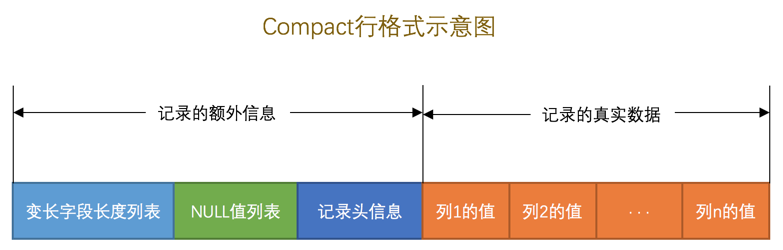
额外信息
-
变长字段长度列表
MySQL 支持一些变长的数据类型，比如VARCHAR(M) 、VARBINARY(M) 、各种TEXT 类型，各种BLOB 类型，把拥有这些数据类型的列称为变长字段，变长字段中存储多少字节的数据是不固定的，所以我们在存储真实数据的时候需要顺便把这些数据占用的字节数也存起来,把所有变长字段的真实数据占用的字节长度都存放在记录的开头部位，从而形成一个变长字段长度列表，各变长字段数据占用的字节数按照列的顺序逆序存放
-
NULL值列表
把允许为null的列，按照列的顺序逆序排列，每个允许存储NULL 的列对应一个二进制位，二进制位的值为1 时，代表该列的值为NULL 。 二进制位的值为0 时，代表该列的值不为NULL 。 MySQL 规定NULL值列表必须用整数个字节的位表示，如果使用的二进制位个数不是整数个字节，则在字节的高位补0 ，如下图
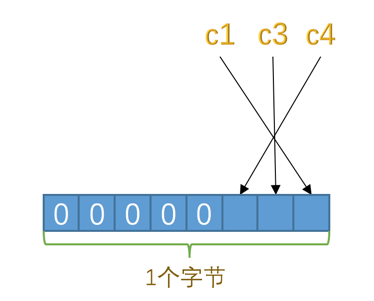
-
记录头信息
除了变长字段长度列表、NULL值列表之外，还有一个用于描述记录的记录头信息，它是由固定的5 个字节组成。5 个字节也就是40 个二进制位，不同的位代表不同的意思，如图所示：
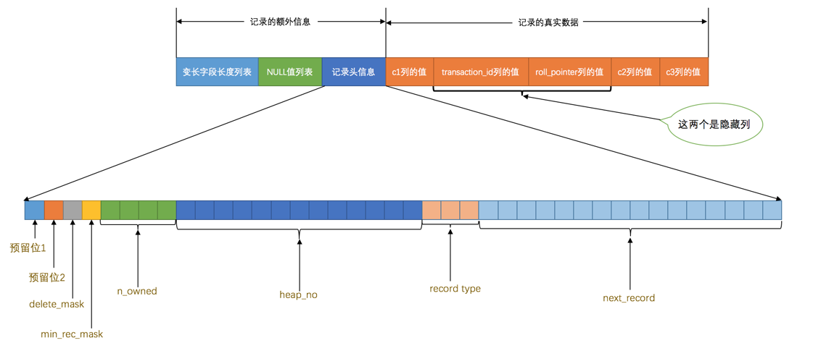
名称 大小（单位：bit 位） 描述 预留位1 1 没有使用 预留位2 1 没有使用 delete_mask 1 标记该记录是否被删除，值为0 的时候代表记录并没有被删除，为1 的时候代表记录被删除掉了 min_rec_mask 1 B+树的每层非叶子节点中的最小记录都会添加该标记 n_owned 4 表示当前记录拥有的记录数 heap_no 13 这个属性表示当前记录在本页中的位置 record_type 3 表示当前记录的类型， 0 表示普通记录， 1 表示B+树非叶节点记录， 2 表示最小记录， 3表示最大记录 next_record 16 表示下一条记录的相对位置
真实数据
-
隐藏数据
记录的真实数据除了我们自己定义的列的数据以外， MySQL 会为每个记录默认的添加一些列（也称为隐藏列），具体的列如下：DB_ROW_ID （行ID唯一标识一条记录）、DB_TRX_ID（事务ID）、DB_ROLL_PTR（回滚指针）。这里需要提一下InnoDB 表对主键的生成策略：优先使用用户自定义主键作为主键，如果用户没有定义主键，则选取一个Unique 键作为主键，如果表中连Unique 键都没有定义的话，则InnoDB 会为表默认添加一个名为row_id 的隐藏列作为主键 ，因此 DB_TRX_ID（事务ID）、DB_ROLL_PTR（回滚指针）是mysql一定包含，但DB_ROW_ID不一定，生成位置如下：
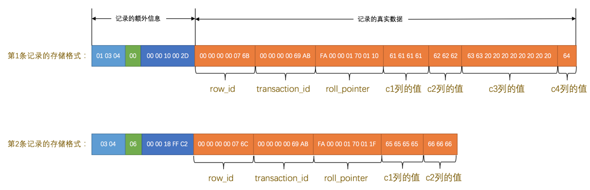
-
行溢出数据
我们知道对于VARCHAR(M) 类型的列最多可以占用65535 个字节。其中的M 代表该类型最多存储的字符数量。why？一个可变字段允许存储的最大字节数的长度最多只能用2个字节存储，而两个字节能表示的最大长度就是256*256=65536然后需要减去一个标志位。MySQL 对一条记录占用的最大存储空间是有限制的，除了BLOB 或者TEXT 类型的列之外，其他所有的列（不包括隐藏列和记录头信息）占用的字节长度加起来不能超过65535 个字节，也就是说2个字节用于存储真实数据的长度（最多）。所以MySQL 服务器建议我们把很长的字符存储类型改为TEXT 或者BLOB 的类型。
-
记录中的数据太多产生的溢出
MySQL 中磁盘和内存交互的基本单位是页，也就是说MySQL 是以页为基本单位来管理存储空间的，我们的记录都会被分配到某个页中存储。而一个页的大小一般是16KB ，也就是16384 字节，而一个VARCHAR(M) 类型的列就最多可以存储65532 个字节，这样就可能造成一个页存放不了一条记录的尴尬情况
对于Compact 和Reduntant 行格式来说，如果某一列中的数据非常多的话，在本记录的真实数据处只会存储该列的前768 个字节的数据和一个指向其他页的地址，然后把剩下的数据存放到其他页中，这个过程也叫做行溢出，存储超出768 字节的那些页面也被称为溢出页，如图
对于Dynamic 和Compressed 行格式 ，这俩行格式和Compact 行格式挺像，只不过在处理行溢出数据时有点儿分歧，它们不会在记录的真实数据处存储字段真实数据的前768 个字节，而是把所有的字节都存储到其他页面中，只在记录的真实数据处存储其他页面的地址，就像这样：
InnoDB数据页结构
页是InnoDB 管理存储空间的基本单位，一个页的大小一般是16KB 。InnoDB 为了不同的目的而设计了许多种不同类型的页，比如存放表空间头部信息的页，存放Insert Buffer信息的页，存放INODE 信息的页，存放undo 日志信息的页等。我们聚焦的是那些存放我们表中记录的那种类型的页，官方称这种存放记录的页为索引（ INDEX ）页。数据页代表的这块16KB 大小的存储空间可以被划分为多个部分，不同部分有不同的功能，各个部分如图所示：
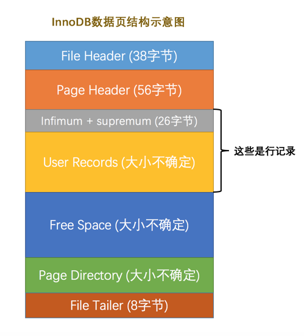
记录在页中的存储
我们自己存储的记录会按照我们指定的行格式存储到User Records 部分，那么行在页中是怎么存储的呢？这时候就用到了行中的记录头信息
1、heap_no 这个属性表示当前记录在本页中的位置，heap_no 值为0 和1由mysql自动生成，所以有时候也称为伪记录或者虚拟记录。这两个伪记录一个代表最小记录，一个代表最大记录
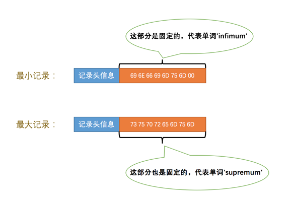
由于这两条记录不是我们自己定义的记录，所以它们并不存放在页的User Records 部分，他们被单独放在一个称为Infimum + Supremum 的部分。
2、next_record，它表示从当前记录的真实数据到下一条记录的真实数据的地址偏移量。比方说第一条记录的next_record 值为32 ，意味着从第一条记录的真实数据的地址处向后找32 个字节便是下一条记录的真实数据。这就是链表！！！，可以通过一条记录找到它的下一条记录。但是需要注意注意再注意的一点是， 下一条记录指得并不是按照我们插入顺序的下一条记录，而是按照主键值由小到大的顺序的下一条记录。而且规定 Infimum记录（也就是最小记录） 的下一条记录就是本页中主键值最小的用户记录，而本页中主键值最大的用户记录的下一条记录就是 Supremum记录（也就是最大记录）
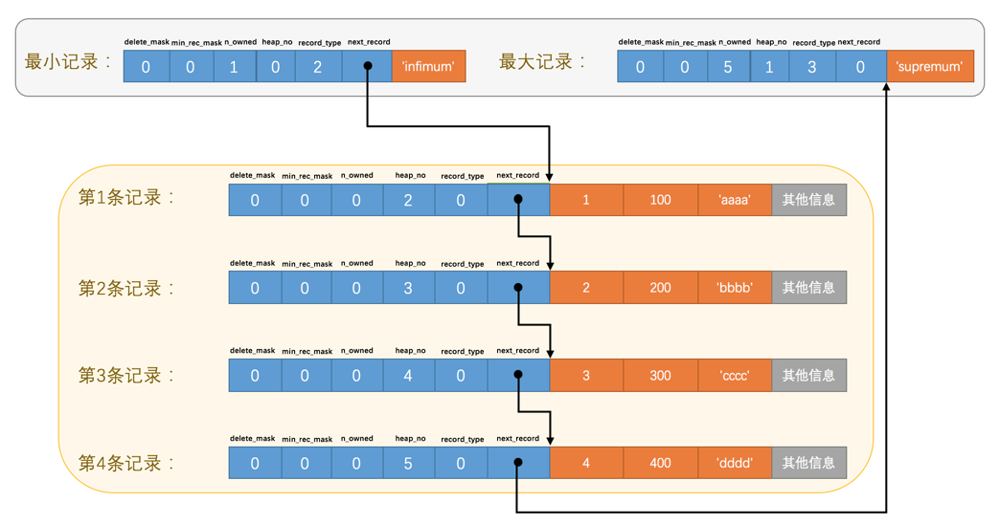
显然记录按照主键从小到大的顺序形成了一个单链表
最大记录的next_record 的值为0 ，这也就是说最大记录是没有下一条记录了，它是这个单链表中的最后一个节点。如果从中删除掉一条记录，这个链表也是会跟着变化的，比如我们把第2条记录删掉：
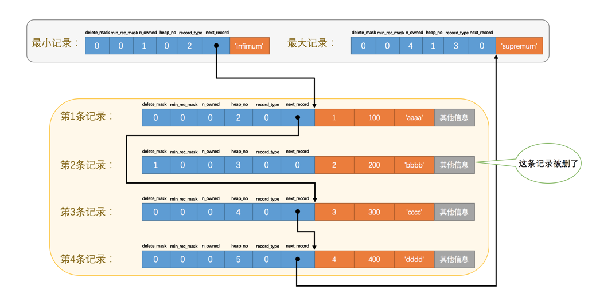
从图中可以看出来，删除第2条记录前后主要发生了这些变化：
-
第2条记录并没有从存储空间中移除，而是把该条记录的delete_mask 值设置为1
-
第2条记录的next_record 值变为了0，意味着该记录没有下一条记录了。
-
第1条记录的next_record 指向了第3条记录。
-
还有一点你可能忽略了，就是最大记录的n_owned 值从5 变成了4 ，关于这一点的变化我们稍后会详细说明的。所以，不论我们怎么对页中的记录做增删改操作，InnoDB始终会维护一条记录的单链表，链表中的各个节点是按照主键值由小到大的顺序连接起来的。
Page Directory（页目录）
目录的制作过程是这样的：
- 将所有正常的记录（包括最大和最小记录，不包括标记为已删除的记录）划分为几个组。
- 每个组的最后一条记录（也就是组内最大的那条记录）的头信息中的n_owned 属性表示该记录拥有多少条记录，也就是该组内共有几条记录。
- 将每个组的最后一条记录的地址偏移量单独提取出来按顺序存储到靠近页的尾部的地方，这个地方就是所谓的Page Directory ，也就是页目录 页面目录中的这些地址偏移量被称为槽（英文名： Slot ），所以这个页面目录就是由槽组成的。
比方说现在的page_demo 表中正常的记录共有6条， InnoDB 会把它们分成两组，第一组中只有一个最小记录，第二组中是剩余的5条记录，看下边的示意图：
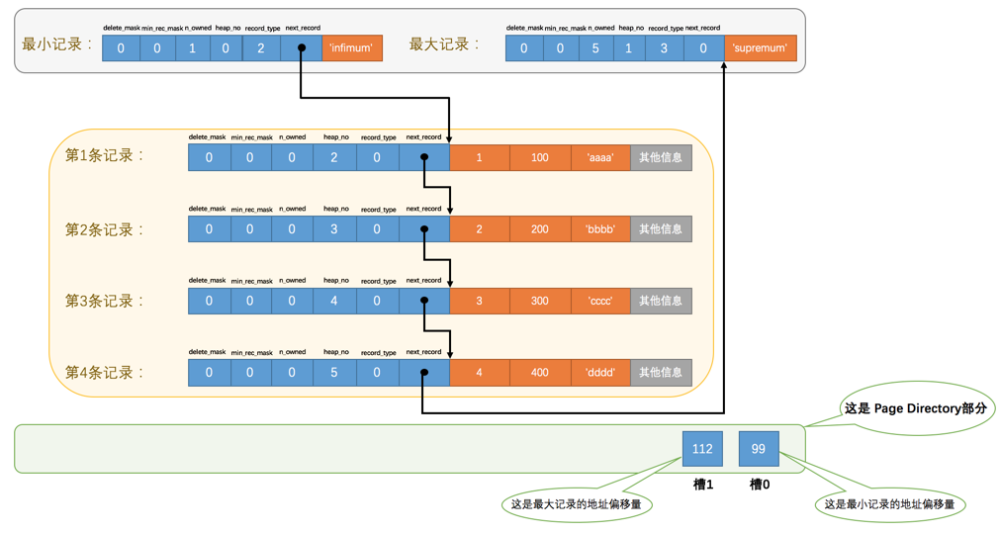
从这个图中我们需要注意这么几点：
- 现在页目录部分中有两个槽，也就意味着我们的记录被分成了两个组， 槽1 中的值是112 ，代表最大记录 的地址偏移量（就是从页面的0字节开始数，数112个字节）； 槽0 中的值是99 ，代表最小记录的地址偏移 量。
- 注意最小和最大记录的头信息中的n_owned 属性
- 最小记录的n_owned 值为1 ，这就代表着以最小记录结尾的这个分组中只有1 条记录，也就是最小记录 本身。
- 最大记录的n_owned 值为5 ，这就代表着以最大记录结尾的这个分组中只有5 条记录，包括最大记录本 身还有我们自己插入的4 条记录。
用图表示就是：
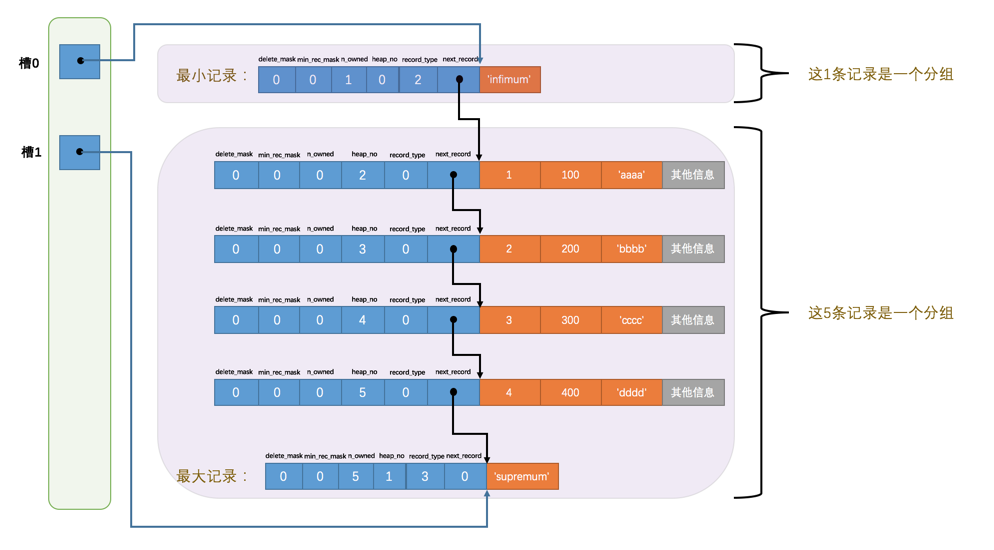
为什么最小记录的n_owned 值为1，而最大记录的n_owned 值为5 呢，这里头有什么猫腻么？ 是的，设计InnoDB 的大叔们对每个分组中的记录条数是有规定的：对于最小记录所在的分组只能有 1 条记录， 最大记录所在的分组拥有的记录条数只能在 1~8 条之间，剩下的分组中记录的条数范围只能在是 4~8 条之间。 所以分组是按照下边的步骤进行的：
- 初始情况下一个数据页里只有最小记录和最大记录两条记录，它们分属于两个分组。
- 之后每插入一条记录，都会从页目录中找到主键值比本记录的主键值大并且差值最小的槽，然后把该槽对 应的记录的n_owned 值加1，表示本组内又添加了一条记录，直到该组中的记录数等于8个。
- 在一个组中的记录数等于8个后再插入一条记录时，会将组中的记录拆分成两个组，一个组中4条记录，另一 个5条记录。这个过程会在页目录中新增一个槽来记录这个新增分组中最大的那条记录的偏移量。
了解了页目录的组成后，那么怎么就加快查找速度的过程呢？看下这个例子
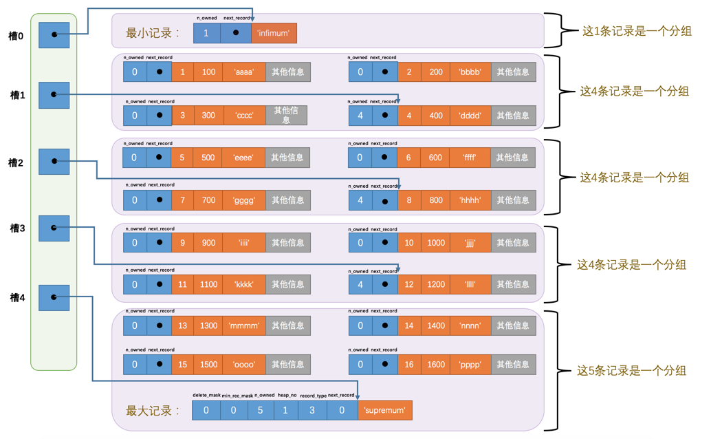
比方说我们想找主键值为6 的记录，过程是这样的：
- 计算中间槽的位置： (0+4)/2=2 ，所以查看槽2 对应记录的主键值为8 ，又因为8 > 6 ，所以设置 high=2 ， low 保持不变。
- 重新计算中间槽的位置： (0+2)/2=1 ，所以查看槽1 对应的主键值为4 ，又因为4 < 6 ，所以设置 low=1 ， high 保持不变。
- 因为high - low 的值为1，所以确定主键值为5 的记录在槽2 对应的组中。此刻我们需要找到槽2 中主键 值最小的那条记录，然后沿着单向链表遍历槽2 中的记录。但是我们前边又说过，每个槽对应的记录都是该 组中主键值最大的记录，这里槽2 对应的记录是主键值为8 的记录，怎么定位一个组中最小的记录呢？别忘 了各个槽都是挨着的，我们可以很轻易的拿到槽1 对应的记录（主键值为4 ），该条记录的下一条记录就 是槽2 中主键值最小的记录，该记录的主键值为5 。所以我们可以从这条主键值为5 的记录出发，遍历槽 2 中的各条记录，直到找到主键值为6 的那条记录即可。由于一个组中包含的记录条数只能是1~8条，所以 遍历一个组中的记录的代价是很小的。
这就是典型的二分法哈哈，总结：
- 通过二分法确定该记录所在的槽，并找到该槽中主键值最小的那条记录。
- 通过记录的next_record 属性遍历该槽所在的组中的各个记录。
Page Header（页面头部）
设计InnoDB 的大叔们为了能得到一个数据页中存储的记录的状态信息，比如本页中已经存储了多少条记录，第一条记录的地址是什么，页目录中存储了多少个槽等等，特意在页中定义了一个叫Page Header 的部分，它是页结构的第二部分，这个部分占用固定的56 个字节，专门存储各种状态信息，具体各个字节都是干嘛的看下
| 名称 | 占用空间大小 | 描述 |
|---|---|---|
| PAGE_N_DIR_SLOTS | 2 字节 | 在页目录中的槽数量 |
| PAGE_HEAP_TOP | 2 字节 | 还未使用的空间最小地址，也就是说从该地址之后就是Free Space |
| PAGE_N_HEAP | 2 字节 | 本页中的记录的数量（包括最小和最大记录以及标记为删除的记录） |
| PAGE_FREE | 2 字节 | 第一个已经标记为删除的记录地址（各个已删除的记录通过next_record 也会组成一个单链表，这个单链表中的记录可以被重新利用） |
| PAGE_GARBAGE | 2 字节 | 已删除记录占用的字节数 |
| PAGE_LAST_INSERT | 2 字节 | 最后插入记录的位置 |
| PAGE_DIRECTION | 2 字节 | 记录插入的方向 |
| PAGE_N_DIRECTION | 2 字节 | 一个方向连续插入的记录数量 |
| PAGE_N_RECS | 2 字节 | 该页中记录的数量（不包括最小和最大记录以及被标记为删除的记录） |
| PAGE_MAX_TRX_ID | 8 字节 | 修改当前页的最大事务ID，该值仅在二级索引中定义 |
| PAGE_LEVEL | 2 字节 | 当前页在B+树中所处的层级 |
| PAGE_INDEX_ID | 8 字节 | 索引ID，表示当前页属于哪个索引 |
| PAGE_BTR_SEG_LEAF | 10 字节 | B+树叶子段的头部信息，仅在B+树的Root页定义 |
| PAGE_BTR_SEG_TOP | 10 字节 | B+树非叶子段的头部信息，仅在B+树的Root页定义 |
- PAGE_DIRECTION 假如新插入的一条记录的主键值比上一条记录的主键值大，我们说这条记录的插入方向是右边，反之则是左 边。用来表示最后一条记录插入方向的状态就是PAGE_DIRECTION 。
- PAGE_N_DIRECTION 假设连续几次插入新记录的方向都是一致的， InnoDB 会把沿着同一个方向插入记录的条数记下来，这个条 数就用PAGE_N_DIRECTION 这个状态表示。当然，如果最后一条记录的插入方向改变了的话，这个状态的值 会被清零重新统计。
File Header（文件头部）
Page Header 是专门针对数据页记录的各种状态信息，比方说页里头有多少个记录了呀，有多少个槽了呀。我们现在描述的File Header 针对各种类型的页都通用，也就是说不同类型的页都会以File Header 作为第一个组成部分，它描述了一些针对各种页都通用的一些信息，比方说这个页的编号是多少，它的上一个页、下一个页 这个部分占用固定的38 个字节，是由下边这些内容组成的
| 名称 | 占用空间大小 | 描述 |
|---|---|---|
| FIL_PAGE_SPACE_OR_CHKSUM | 4 字节 | 页的校验和（checksum值） |
| FIL_PAGE_OFFSET | 4 字节 | 页号，InnoDB 通过页号来可以唯一定位一个页 |
| FIL_PAGE_PREV | 4 字节 | 上一个页的页号 |
| FIL_PAGE_NEXT | 4 字节 | 下一个页的页号 |
| FIL_PAGE_LSN | 8 字节 | 页面被最后修改时对应的日志序列位置（英文名是：Log SequenceNumber） |
| FIL_PAGE_TYPE | 2 字节 | 该页的类型 |
| FIL_PAGE_FILE_FLUSH_LSN | 8 字节 | 仅在系统表空间的一个页中定义，代表文件至少被刷新到了对应的LSN值 |
| FIL_PAGE_ARCH_LOG_NO_OR_SPACE_ID | 4 字节 | 页属于哪个表空间 |
详解：
-
FIL_PAGE_SPACE_OR_CHKSUM
这个代表当前页面的校验和（checksum）。啥是个校验和？就是对于一个很长很长的字节串来说，我们会 通过某种算法来计算一个比较短的值来代表这个很长的字节串，这个比较短的值就称为校验和。这样在比 较两个很长的字节串之前先比较这两个长字节串的校验和，如果校验和都不一样两个长字节串肯定是不同 的，所以省去了直接比较两个比较长的字节串的时间损耗。
-
FIL_PAGE_TYPE
这个代表当前页的类型，我们前边说过， InnoDB 为了不同的目的而把页分为不同的类型，我们上边介绍的 其实都是存储记录的数据页，其实还有很多别的类型的页，我们存放记录的数据页的类型其实是FIL_PAGE_INDEX ，也就是所谓的索引页。
-
FIL_PAGE_PREV 和FIL_PAGE_NEXT
我们前边强调过， InnoDB 都是以页为单位存放数据的，有时候我们存放某种类型的数据占用的空间非常大 （比方说一张表中可以有成千上万条记录）， InnoDB 可能不可以一次性为这么多数据分配一个非常大的存 储空间，如果分散到多个不连续的页中存储的话需要把这些页关联起来， FIL_PAGE_PREV 和FIL_PAGE_NEXT 就分别代表本页的上一个和下一个页的页号。这样通过建立一个双向链表把许许多多的页就都串联起来了， 而无需这些页在物理上真正连着
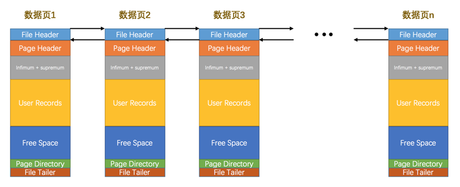
总结
- InnoDB为了不同的目的而设计了不同类型的页，我们把用于存放记录的页叫做数据页。
- 一个数据页可以被大致划分为7个部分，分别是
- File Header ，表示页的一些通用信息，占固定的38字节。
- Page Header ，表示数据页专有的一些信息，占固定的56个字节。
- Infimum + Supremum ，两个虚拟的伪记录，分别表示页中的最小和最大记录，占固定的26 个字节。 User Records ：真实存储我们插入的记录的部分，大小不固定。
- Free Space ：页中尚未使用的部分，大小不确定。
- Page Directory ：页中的某些记录相对位置，也就是各个槽在页面中的地址偏移量，大小不固定，插 入的记录越多，这个部分占用的空间越多。
- File Trailer ：用于检验页是否完整的部分，占用固定的8个字节。
- 每个记录的头信息中都有一个next_record 属性，从而使页中的所有记录串联成一个单链表。
- InnoDB 会为把页中的记录划分为若干个组，每个组的最后一个记录的地址偏移量作为一个槽，存放在 Page Directory 中，所以在一个页中根据主键查找记录是非常快的，分为两步：
- 通过二分法确定该记录所在的槽。
- 通过记录的next_record属性遍历该槽所在的组中的各个记录。
- 每个数据页的File Header 部分都有上一个和下一个页的编号，所以所有的数据页会组成一个双链表。
- 为保证从内存中同步到磁盘的页的完整性，在页的首部和尾部都会存储页中数据的校验和和页面最后修改时 对应的LSN 值，如果首部和尾部的校验和和LSN 值校验不成功的话，就说明同步过程出现了问题。